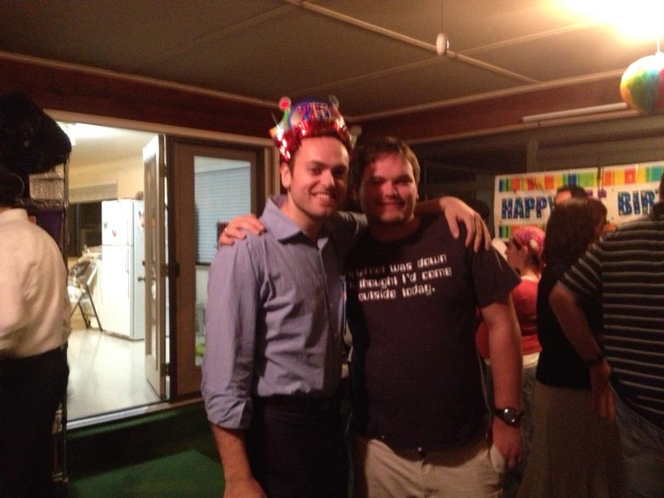
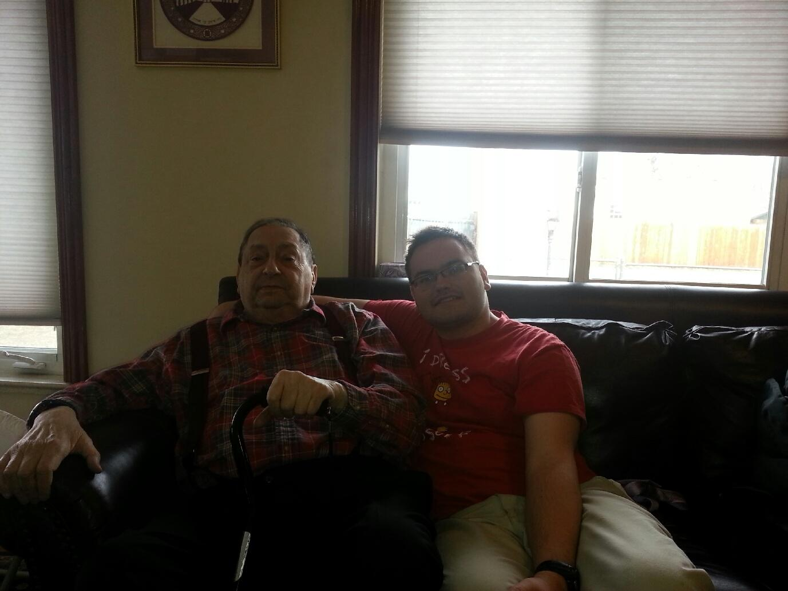
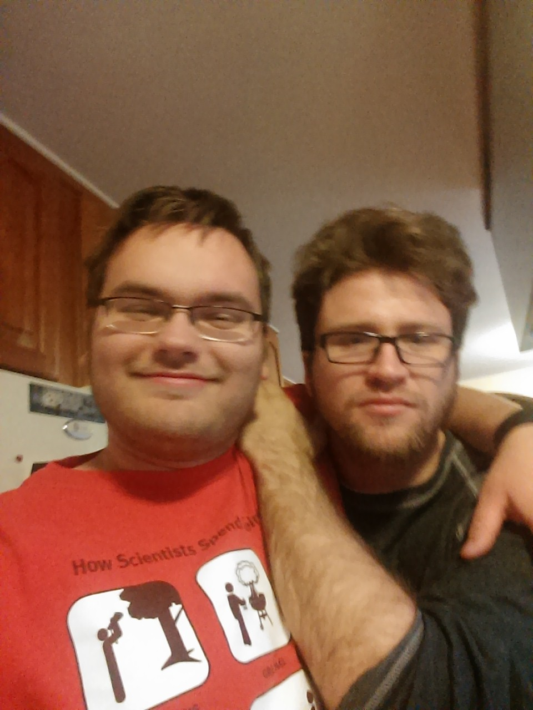
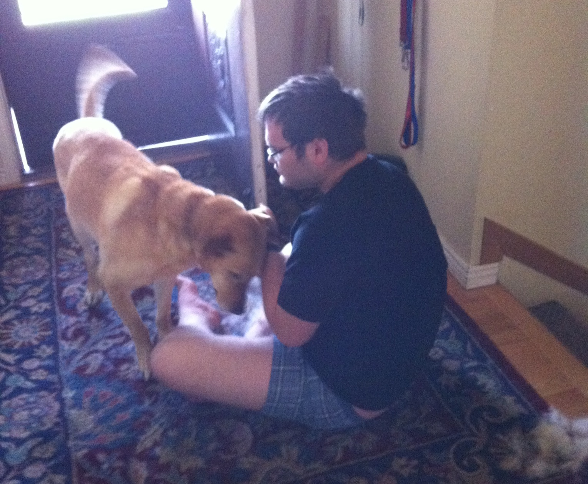
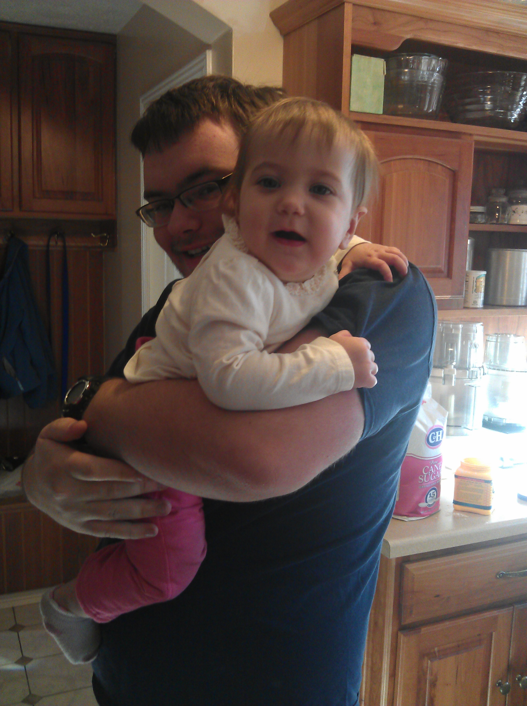
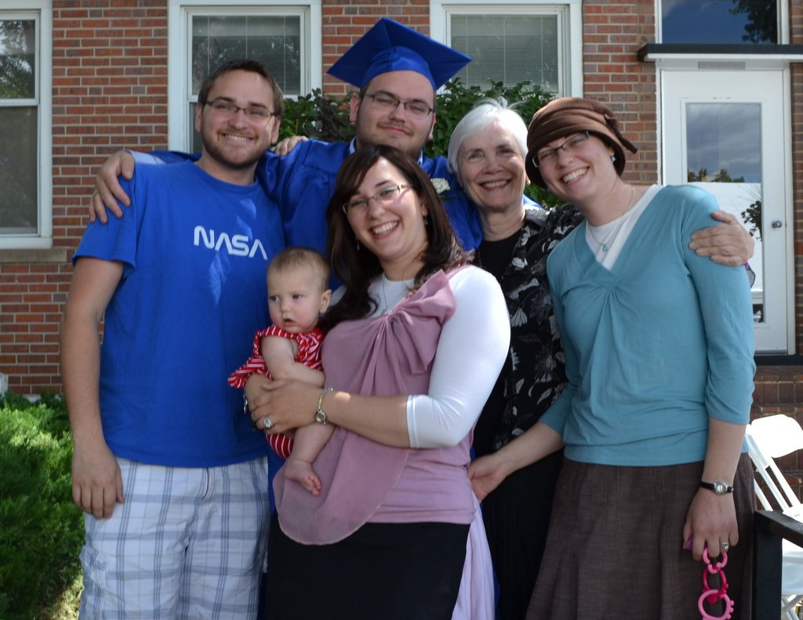
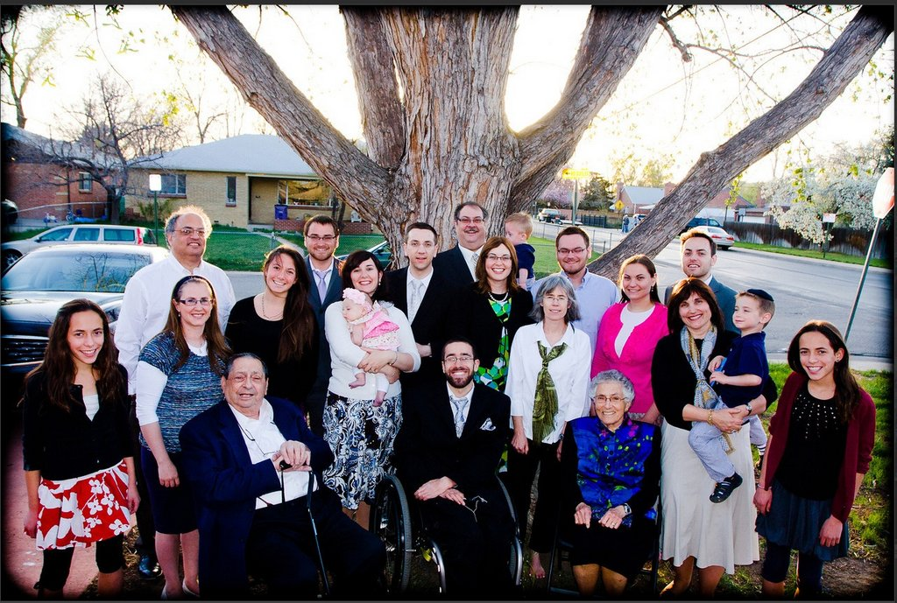
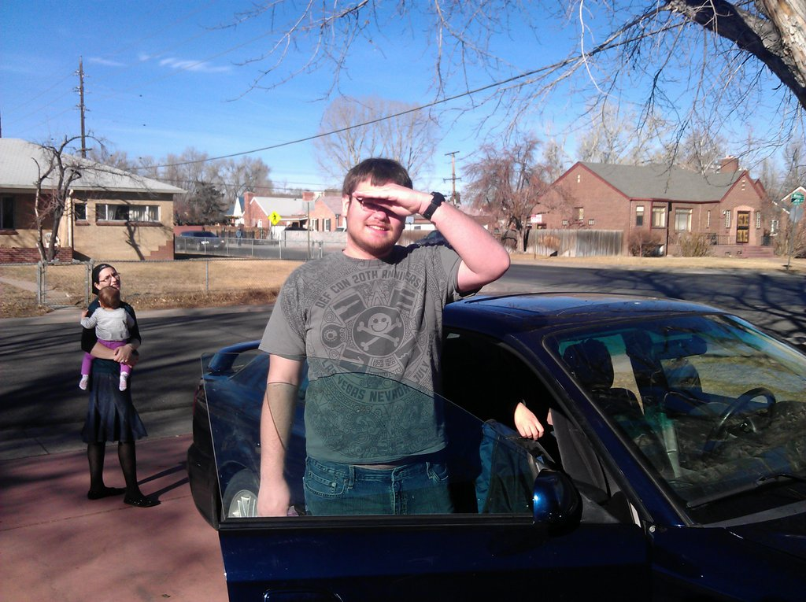
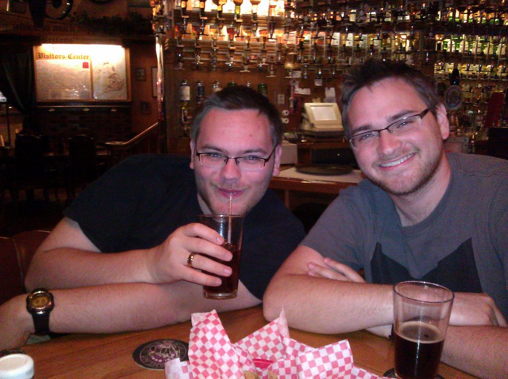

A Tribute To Daniel Bulow (w1n5t0n) (16.02.1994 - 19.05.2013)
 Doni with his Family
Doni with his Family
Ephraim Bulow, Doni's father:
Doni was, and always will be, my son. Those of you who were fortunate enough to get to know Doni, were privileged. I was especially privileged to be his father. Doni suffered for years from depression and mental illness, but to us, his family, we saw him as nothing less than the kindest, gentlest, sweetest man in the world. Doni didn’t see people through the lens of class, race or religion. He saw and treated people based upon his understanding of their characters. He was, at the same time, friends with a Harvard Law School graduate and a chili pepper stand owner, microbiology majors and older people struggling in post DOS world.
As an elementary school kid, he was friends with a boy in his class with Down’s syndrome. After Doni’s funeral, the mother of that boy came to me and told me that Doni was the first person ever to treat her son as just a boy – not a disability. He was endlessly patient with his parents who are technology challenged. As I sit here typing on my mechanical keyboard (so much better than the mushy one I had before) I thank Doni for his constant stream of good advice and caring. He was an outstanding sourdough bread baker, a maker of yogurt, pickles and cheeses and an experimenter and explorer in all that he did. When Doni’s mother traveled, which she does relatively frequently for her work, Doni and I would often go out for dinner together. Whether it was sushi or pizza or grilled fish at home, he was always an enthusiastic foodie, eager to try new things, and a joy to have as a companion. My heart is broken and I miss him more than words can say.
 Doni and Avi at Avi's Birthday Party
Cory Doctorow, Author, Blogger, and Digital Rights Activist:
I didn't know Daniel, and only "met" him once, in a very pleasant online chat with a community he helped found. But of course, I was very sad to hear of his suicide. Suicide is almost always tragic -- leaving aside people with terminal illnesses who choose to end their lives in a peaceful and dignified way -- and I can tell from those who knew Daniel better than I did -- or ever will -- that this has hit them hard.
Memorials are for the living, as well as the dead. Daniel left behind a group of good and warm friends who came to know each other through a community he helped make happen. In the awful jargon of commodified relationships, you hear "social media experts" talk about "community features," by which they mean a message board or a chatroom.
But a chatroom isn't a community any more than soil and seeds are a garden. A community is something that is grown and watered and tended, and the people around whom a community coheres are able to do something simple, profound and impossible-to-codify.
Daniel clearly was one of those people. If I knew nothing else about him, I'd know that his death was a tragedy because of the work he did there.
I only possess a pitiful handful of facts about Daniel. I know that he ran a business where he fixed people's computers -- another calling that requires sensitivity and an interest in helping people twinned with a nuanced understanding of how technology works.
I know that he was a free software advocate, a principled stand that demands that its adherents think beyond their own immediate mastery of technology and consider the way that less skilled people will have their lives improved or shattered by the technology we foist on them.
I know that he was a fan of my books, and that he used w1n5t0n as a handle online, and of course that's flattering. It makes me feel a little responsible for him, as someone who passed some ideas over the aether, to have them snag on his mind.
I know that he was a member of the human race, a species capable of the most amazing acts of bravery, strength and generosity.
For these reasons, his death is a tragedy. And for one more: suicide can't solve problems. As I wrote when my friend Aaron Swartz -- another principled hacker, free software advocate, and fixer-of-machines -- killed himself in January:
"...[W]hatever problems Aaron was facing, killing himself didn't solve them. Whatever problems Aaron was facing, they will go unsolved forever. If he was lonely, he will never again be embraced by his friends. If he was despairing of the fight, he will never again rally his comrades with brilliant strategies and leadership. If he was sorrowing, he will never again be lifted from it.
"Depression strikes so many of us. I've struggled with it, been so low I couldn't see the sky, and found my way back again, though I never thought I would. Talking to people, doing Cognitive Behavioral Therapy, seeking out a counsellor or a Samaritan -- all of these have a chance of bringing you back from those depths. Where there's life, there's hope. Living people can change things, dead people cannot."
There is no good way to say goodbye in a situation like this, but there is a good way to live on after the goodbyes are done. Daniel's friends had an unmistakable camaraderie that was easy to spot, even on a casual visit to their space. I hope that you, Daniel's friends, can continue to take care of one another -- to continue Daniel's missions of helping people, of offering friendship, and of caring about matters of principle. I hope that you can offer each other the support I know you would have given to Daniel, if he'd been able to ask for it -- and I hope that you will not squander Daniel's death by failing to ask for help if you need it.
Suicide reminds us all that though we know and see much about one another through our networked friendships, we still must take affirmative steps to take care of one another. It's easy to see the status updates and GitHub checkins and assume that everything is OK. But unless you ask, and listen carefully to the answer, you can't know that. Please take good care of one another.
 Doni and his Brother Uri (Doug)
Doni and his Brother Uri (Doug)
Douglas aka Uri, Doni's brother:
Everything in the visible universe is composed of atoms formed in stars. From all reaches of the cosmos, they come together in brief and beautiful moments, forever entwined with space and time. Doni serves to remind us of our noble origins. A beautiful beacon in an infinite lineage of stars. As many of you know, Doni wasn't a religious person. In honor of Doni's memory, I would like to offer you the best consolations that physics can afford. The First Law of Thermodynamics tells us that energy is neither created nor destroyed. It is infinite in its extent and motion, transferred between all beings, all mass, all matter composing the universe. Doni's energy is not gone. He is always with us, and always has been with us. Every quanta of energy, all the particles whose paths were interrupted by his smile, by the touch of his hands, hundreds of trillions of particles now translated into memory that will forever redefine us, all of us honored to have known him.
 Doni and his Grandfather
xMonsterx (Brandon):
Doni was my best friend. Not my best friend online, not my best friend at the moment, my best friend. Period. I loved him as a friend, and as much as a brother. He was a gift to the world, a brilliant mind, gone too soon. He was a mentor to some, a friend to many, and an amazing person to all. My only regret is that he is gone so soon, and if I could do anything to change that, I would. Rest in peace, my friend.
 Doni and Tyler
Mudkipith:
Daniel Bulow....
Im sorry i wasn't there for you,
when you needed help the most,
I respected and admired you,
I read your every Post,
You were my friend, my teacher,
and i loved you like a brother...
Born to be a genius,
you programmed like no other...So as this talents gone to waste,
My salty tears, i can taste,
Ill miss our chats, and your teachings too,
Rest In Peace Winston...
I will not forget you.RIP Dani....
your OLD friend... Mud
 Doni at his Graduation
Doni at his Graduation
Neo95:
Really wish I had gotten to know you better bro, but we can't go on regretting.
we're saddened by your departure but this is the time to celebrate your life, share stories, and remember the times we had with you :)
I Hope to meet you in another life, but untill then, Rest In Peace my brother, love.

Doni at his Graduation
MegaByte (Sam):
I did not know Daniel for very long. I had talked with him only on several occasions, all of which, although casual converations, gave me a good understanding of the type of person Daniel was. Daniel, a dear friend of a friend, was one of the most sincere and kind persons I have had the privelege of meeting thus far. Knowledgable and passionate, he also had a sense of humor, which made its way into our conversations often. I am really thankful that Brandon introduced me to Daniel and the GNUHackers family - I'm awfully fond of the people I've met here.
Thank you Daniel for igniting a spark in so many of our lives. Rest in peace, w1n5t0n.
 Doni at DEFCON
Doni at DEFCON
NeCRoN99:
So glad to have known you So sad to see you go Never will I be able to replace w1n5t0n, my 'little bro'
 Doni showing off his DEFCON room
Doni showing off his DEFCON room
Mr. Slaughter, IT Director at Denver Academy:
Doni was a part of our team. We learned much more from him then he did from us. I was fortunate to have the opportunity to be his friend/coworker for 4 years. He is missed. Greatly missed.
 Doni with Rusty
Andy Shaffer, Former Systems Administrator at Denver Academy:
Doni was a brilliant and talented member of the technology community. I was fortunate enough to work with him for 2 years, and enjoyed following his work after graduating from DA. He will be sorely missed.
 Doni and Meira
Zinnoc:
Rest in peace, buddy. You will forever be deeply in our hearts and minds. Thank you for everything you have made for all of us. I am sorry that I was not there for you. Wish I knew you in person. I am glad that you are no longer feeling the terrible pain that was surrounding you for years. Goodbye, Doni!
 Doni With His Family
 Bulow Family Photo
 Doni's First day of college
 Uri and Doni